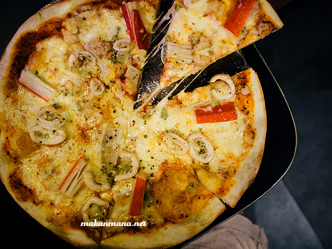

Salah satu resto baru yang hadir di sebelah New Renjiro Sushi dan seberang Lekker Urban Resto akhirnya sempat kami kunjungi. Menawarkan pasta dan pizza, read on our review for Pizza Boy.

Resto yang menempati 1 ruko diseberang Medan Ville Hotel ini menambah hiruk pikuk kawasan Multatuli yang paling susah nyari tempat parkirnya. Dengan interior yang lumayan playful seperti berada di dalam spaceship, resto ini menyediakan 2 lantai buat tempat diningnya. Kebetulan malam minggu itu resto ini lumayan ramai, sehingga kami dibawa ke lantai 2.
Daftar menunya tidak banyak dan penggunaan nama asing sedikit membingungkan kami. Untungnya sih ada beberapa foto penunjang walaupun ukurannya kecil. And that’s the deal, kami biasanya pesen dari gambar *tunjuk sana tunjuk sini* karena kami percaya, itulah menu yang ingin ditonjolkan restoran #SekalianPromoSavorsnap. Anyway, berikut menu yang kami pesan.
Chicken Triangle (21rb), roti isi keju dan bumbu bolognese sebagai makanan pembuka ini cukup menggugah selera. But be careful, naturalnya keju sih bikin eneg kalo kebanyakan dimakan.
Safe bet, Beef Carbonara (37rb). Menu yang hampir tersedia di setiap cafe. Verdict: Good, but not impressive.
Risotto mushroom (32rb), alasannya sih karena nanti pizzanya udah dikasi topping seafood, jadi kita coba risotto yang lebih plain. Turns out quite good. Tidak terlalu basah, tidak lengket dan citarasa jamurnya kerasa.
Al Salmone Arancio (48rb), as good as the name sound, as weird as it tasted. Kami semua setuju, pasta yang satu ini dengan cream yang lumayan banyak memiliki sedikit citarasa sirup obat batuk begitu dicicipi. The most expensive pasta we ordered that night, ironisnya tak habis dimakan.
Untunglah spicy olio turkey ham (35rb) meredakan kekecewaan kami. Not the daily olio we’ve seen, tetapi penambahan sedikit turkey ham menambah keunikan tersendiri, this one is recommended.
Okay now let’s jump into the pizza. Ada 2 jenis pizza yang disediakan disini, tebal dan tipis #duh. Karena penasaran dan tentunya karena porsinya dapat dipilih S, M, L, akhirnya kami putuskan untuk mencoba kedua pizza ukuran sedang. Sistem pemesanan pizza disini pun pelanggan bebas memilih 3 jenis topping.
Untuk pizza dengan based tebal thick wheat ( 53rb), adonannya menurut kami masih kurang tepat sebagai pizza base sehingga terasa lembut dan seperti roti tawar, tetapi ini hanya masalah preferensi. Beberapa orang malah menyukai roti lembut ketimbang kering dan lebih keras.

The main highlight of our dinner, Pizza Costiera (49rb). Kalo menu yang satu ini sih juara, dengan base tipis, panggangannya tidak terlalu kering namun tetap crunchy. Lumuran keju mozarella diatas base juga merata dan yang paling penting, rasanya pas di lidah dengan harga yang bersahabat.
Power Pizza Boy
Komp. Multatuli Indah Blok CC-9
Telp: 061-77900900